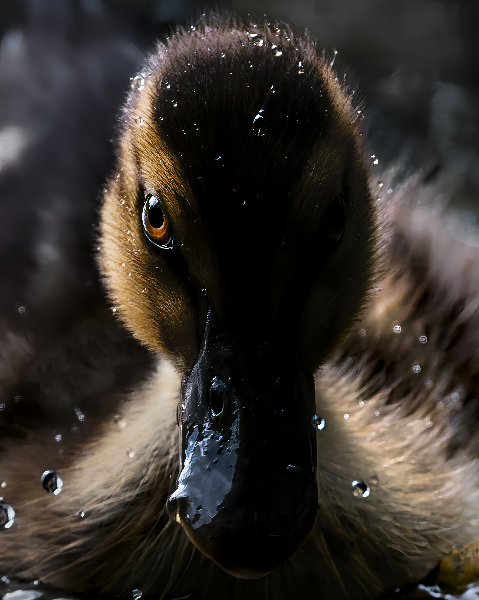
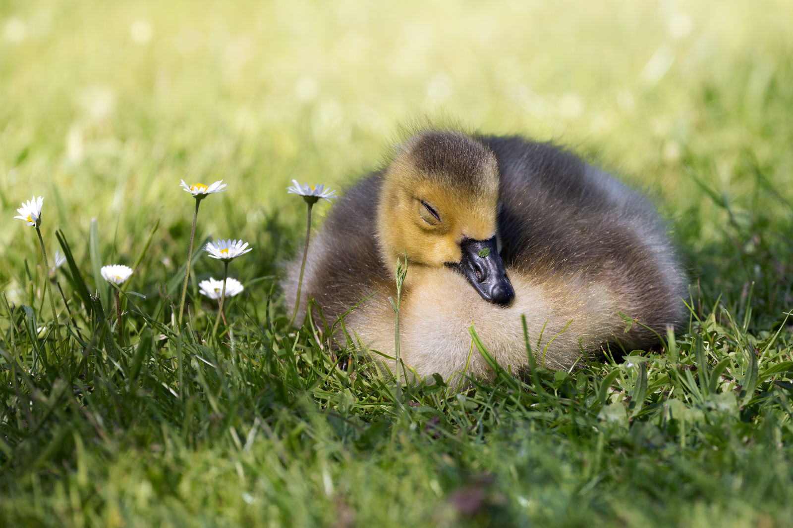
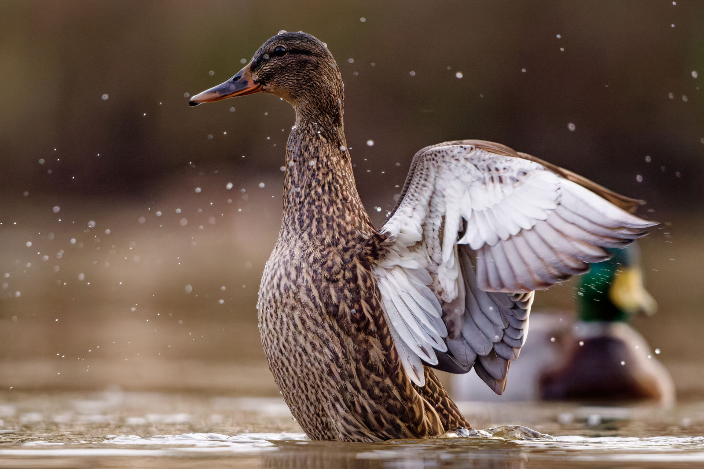
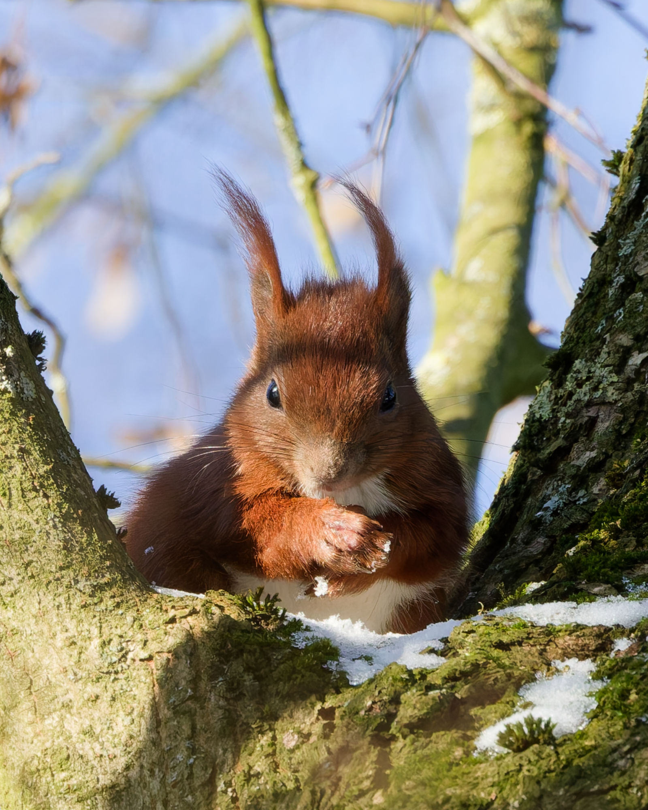
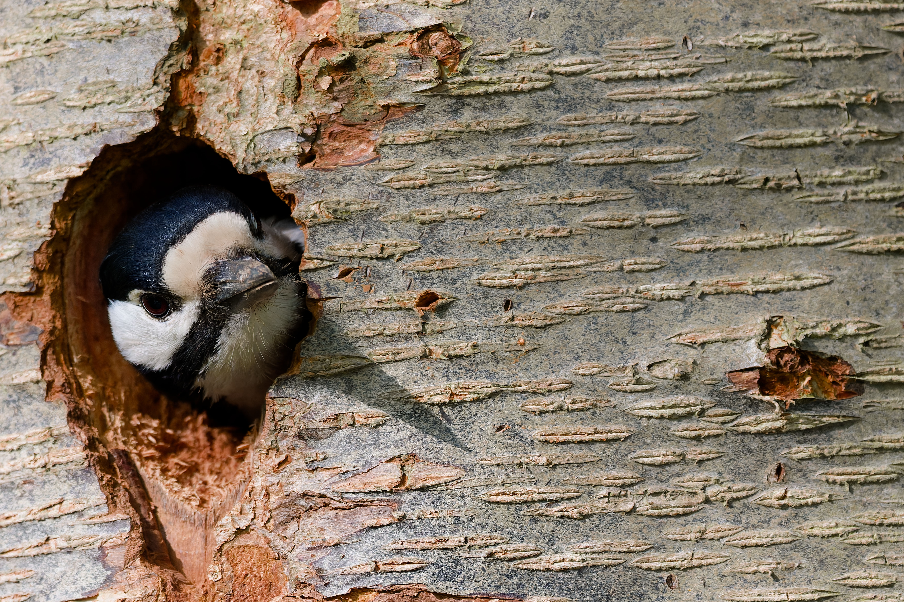
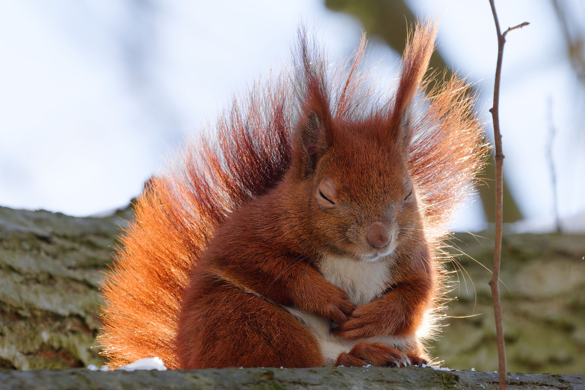
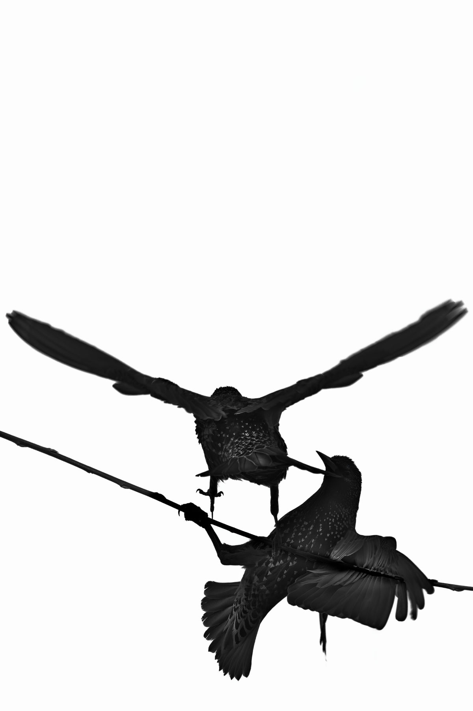
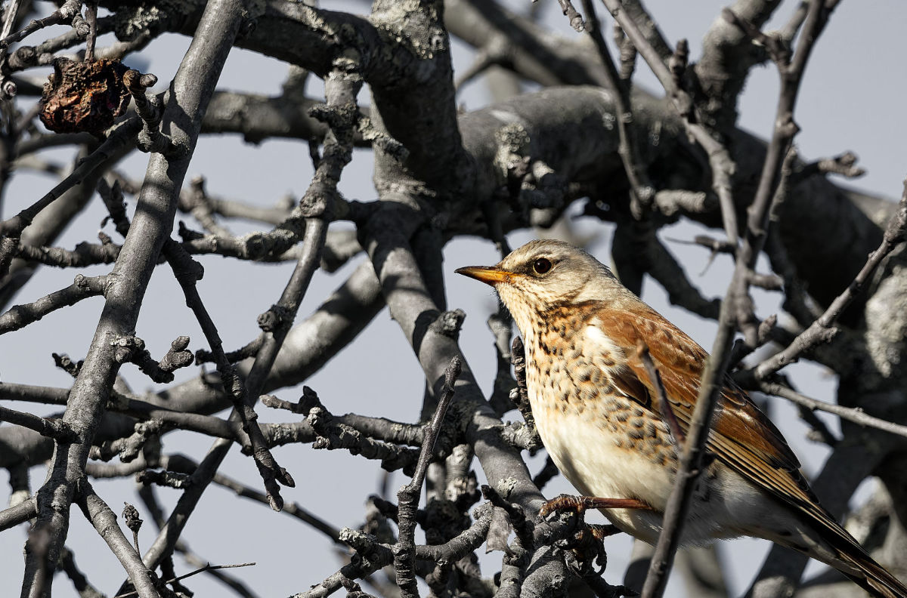
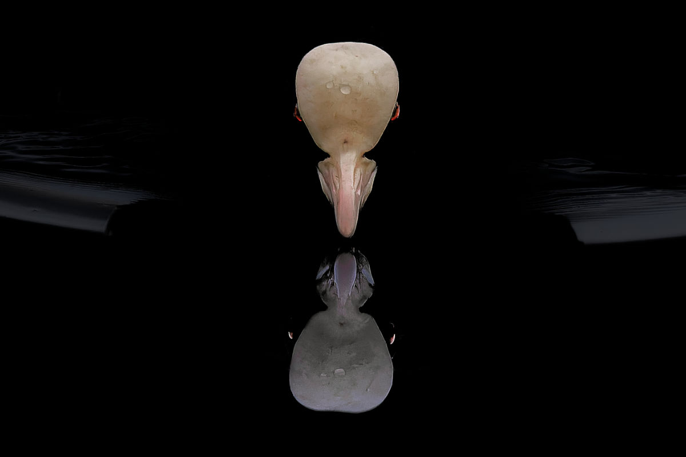
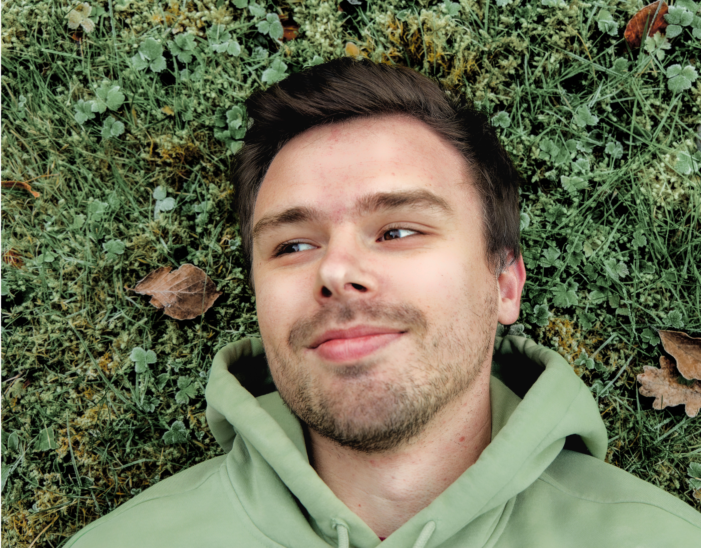

Galerie
Eine Auswahl meiner besten Aufnahmen, sortiert nach Motiv und Stil.
Teichleben
Schwimmend, putzend, schlafend - das Leben am kühlen Gewässer nebenan.

Entenküken · Nahaufnahme
Gänseküken · bei Gänseblümchen
Stockente · FlügelzauberGartenleben
Rotkehlchen, Meisen, Gimpel & Co. im Wechsel der Jahreszeiten.
 Singdrossel · grüner Gesang
Singdrossel · grüner Gesang Dorngrasmücke · Frühlingsgezwitscher
Dorngrasmücke · Frühlingsgezwitscher Kohlmeise · frech versteckt
Kohlmeise · frech verstecktWaldleben
Eichhörnchen, Specht & Co im grünen Lebensraum.

Eichhörnchen · planend
Buntspecht · aus Baumhöhle
Eichhörnchen · in sich ruhendReduktion - Natur neu betrachtet
Echte Naturfotografie, reduziert, neu interpretiert und bewusst anders gesehen.

Star-Silhouette · Reduktion und Detail
Singdrossel · der letzte Apfel
Blässhuhn · dunkle SpiegelungMotive in Formen für alle
Viele meiner Fotografien können auf Anfrage in verschiedensten Formaten und Ausführungen angefertigt werden.
Einzeln oder im Set, auch als Grußkarte.
Hochwertiger Druck, auf Wunsch im Rahmen.
Für Presse, Verlage und redaktionelle Nutzung.
Sticker, Lesezeichen und Sonderwünsche.
Zur Orientierung: Postkarten ab 3 €, Fine-Art-Prints ab 18 € — abhängig von Format und Ausführung. Da vieles individuell entsteht, bekommst du auf Anfrage ein passendes Angebot.
Kontakt aufnehmenDie Natur im Jetzt und Hier genießen.
Ich fotografiere die Tiere und Pflanzen unserer Heimat ehrlich, ruhig und mit einem Blick für die besonderen Momente des Alltäglichen. Die Natur ist allgegenwärtig um uns herum. Statt weiten Reisen reicht es, sich nur ein paar Schritte vor die Haustür zu begeben. Neben authentischer Naturfotografie entstehen aus ausgewählten Bildern zudem künstlerische Arbeiten, die meine persönliche und kreative Sicht auf die Natur zeigen.

Benedict Gertz
Ich halte den nötigen Abstand, um die Tiere nicht zu stressen. Ich platziere kein Futter und locke keine Tiere an. Meine Fotografien entstehen spontan im Moment, ohne etwas zu erzwingen.
Termine im Norden
Meine Drucke und Postkarten gibt es auch zum Anschauen und direkt Mitnehmen auf regionalen Märkten und Veranstaltungen.
Ich stelle gerade die ersten Markttermine im Norden zusammen. Sobald ein Termin feststeht, erscheint er hier zuerst — und auf Instagram.
- Kreis Pinneberg
- Hamburg
Markt oder Veranstaltung?
Du organisierst etwas in der Region und suchst einen Naturfotografen vor Ort? Schreib mir gerne — ich melde mich zurück.
Termin anfragenAnfragen, Anregungen und Austausch
Ob Print, Postkarte, Sticker oder ein einfaches Hallo. Ich freue mich auf deine Nachricht.